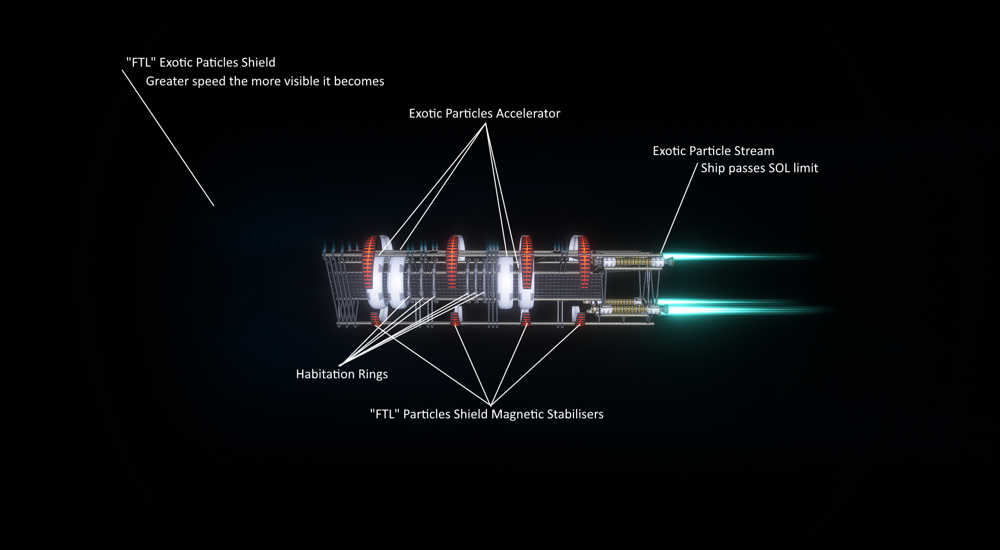

FTL, or Faster-Than-Light, technology operates as a ring-shaped particle accelerator, propelling exotic particles from engines that surpass the speed of light. These particles are then accelerated further, creating an FTL shield when paired with a second ring. This shield allows a spacecraft to warp the space fabric in front of it, facilitating acceleration beyond the light-speed limit. The genesis of Faster-Than-Light technology traces back to the reverse engineering of an ancient Venusian alien ship, preserved for millions of years beneath the Venusian soil. Exotic materials, essential for FTL, are synthesized from heavy materials (specifics secretive by ULT). To achieve greater speeds, a proportional FTL field is necessary, stabilized by magnetic stabilizers.
A Galactic Wide Agreement among humanity governs FTL travel:

- Ship travel during FTL must not interfere with any entities or obstacles, only proceeding from point A to point B.
Signals from FTL transmitters must remain secure, preventing hijacking or retransmission to avoid infinite loop time paradoxes.
- Crew members are required to carry two watches, one synchronized with Milky Way Galactic Time and the other with Local Time.
-FTL travelers are exempt from charges related to side effects such as schizophrenia, time disorientation, and visual hallucinations.
Constant FTL travelers frequently report experiencing "Timelines Overlaying," wherein individuals witness visual hallucinations of past events.
 ExtraTerrestrial Technologies
ExtraTerrestrial Technologies Name: Space Shift Faster-Than-Light Ring System | Short: FTL
Name: Space Shift Faster-Than-Light Ring System | Short: FTL